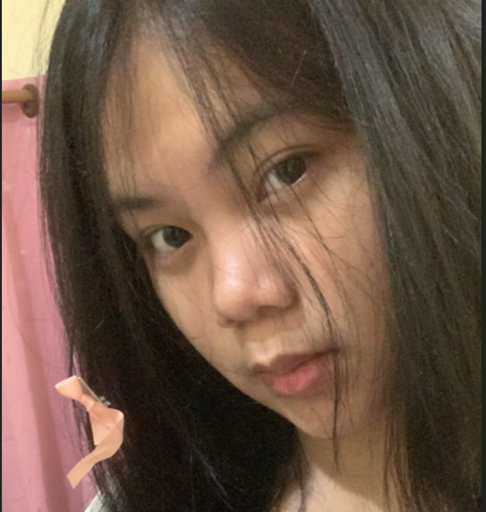
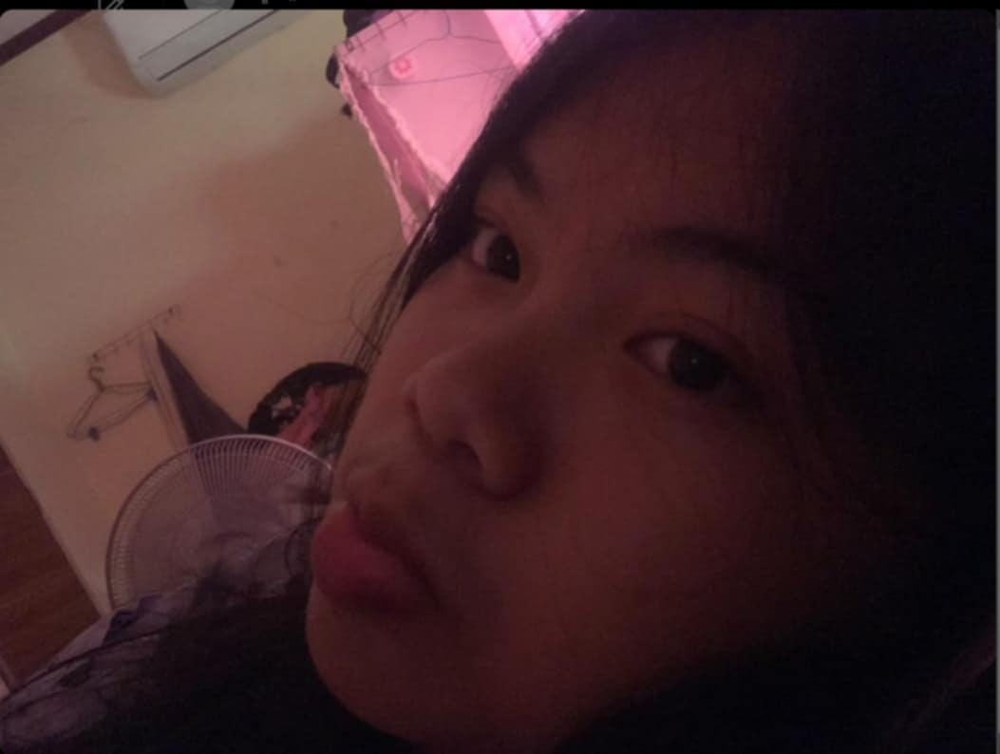
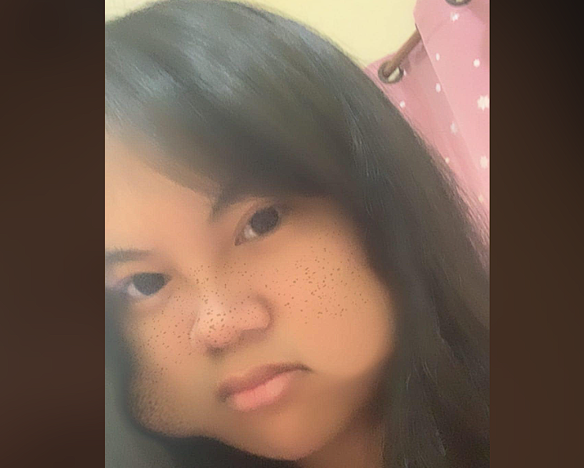

ສະບາຍດີ ຂ້ອຍຊື່ນາງ ລິຕ້າ

ຂ້ອຍເອງແບ່
ສິ່ງທີຂ້ອຍ
- ຕົ້ມທ່ອມ
- ສູບພອດ
- ແກງໜໍ່ໄມ່
- ຕຳໝາກຮຸ່ງເຜັດໆເດີພີ່ນ້ອງ
- ປ້າຕີ່
ນີ້ຄືຫລັກຖານທີຂ້ອຍປ້າຕີ່ສອດແຈ້ງ

ນິດໃສຂ້ອຍ
- ນອນໂມງເມກາ
- ອາບນ້ຳສາມມື້ເທື່ອ
- ຕົ້ມທຸກມື້
- ຕົ້ມ
- ຕົ້ມ555
5454545454
ຂ້ອຍຖືກບັກມາກແບນIGນະເພາະຂ້ອຍເປັນຄົນໂລກຈິດ😭

i hear mark buk kuy